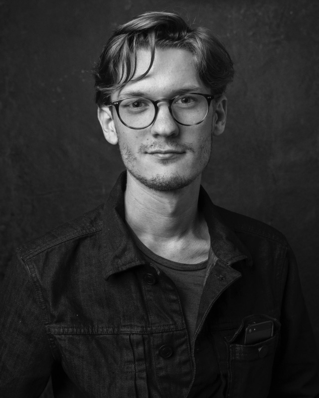

Effective type is my design mission: typefaces for brands and products, from one-style logotypes to open-source variable families.
Skills
- Type design
- Logotypes
- Font engineering
- Variable fonts
- OpenType features
- UI design
- Web development
- Python tooling for type
- Editorial design and lettering
Select clients
- Vercel
- Cal.com
- Pentagram
- Nike
- NBCUniversal
- WELTKERN
- Harvey
- NYMZO
Latest releases
- Geist Serif, Vercel October 30, 2026
- Cal Sans 2, Cal.com 2026
- Cal Sans, Cal.com Google Fonts
WORDMARK is the typographic practice of Mark Davis. It has gone by other names since 2017; the work has not changed. It is based in Brooklyn, New York, and it engineers what it draws: the masters, the axes, the kerning, and the OpenType features that let a family hold up in production.
Its largest open-source project is the type for Cal.com: Cal Sans, Cal Sans UI, Text, and Geo, an eight-master, six-axis variable family of about 1,000 glyphs and 3,000 kerns, delivered 1.9 million times a week through Google Fonts. Creative Boom named Cal Sans UI one of the best new typefaces of April 2026. For Vercel, the studio took over the drawings for Geist Serif, the company’s first serif, expanded the glyph set, built the variable axis, and kerned it; it was released on October 30, 2026, as the fourth Geist family.
The rest is custom work. For Harvey, WORDMARK is expanding Harvey Serif, the brand’s custom display serif. It holds a type design and engineering retainer with WELTKERN Type. For Pentagram, with Margot Lévêque, it mastered Shopbop Serif and drew its custom glyphs, swash ligatures, and stylistic sets. With Otherward, it took the NYMZO logotype, for a luxury chess challenger brand, to global launch and product readiness. And with Tronvig it was creative lead on a wayfinding and donor signage program for the National Museum of Women in the Arts, including the new building front sign and lettering.

Mark Davis, founder
Mark Davis studied at Type@Cooper, critiqued by Christian Schwartz and Tobias Frere-Jones, and moved from the Midwest to Brooklyn to start at Font Bureau, chosen and placed by Roger Black, under Cyrus Highsmith. He has since taught at Queens College, the School of Visual Arts, and the Rhode Island School of Design.
Press
- 2026
Creative Boom: The best new typefaces for April 2026, Cal Sans UI
- 2026
Abduzeedo: a feature on Cal Sans UI
- 2021
The Late Show with Stephen Colbert: Officially In Charge, President Biden Begins Dismantling His Predecessor’s Legacy, Tiny Hand in the monologue
- 2020
The Futur, live interview with Chris Do 100K+ views
- 2019
The Tonight Show Starring Jimmy Fallon: Donald Trump’s Tiny Hand Font
- 2016
Fast Company: Donald Trump’s Crazy Handwriting Is Now a Free Font Called Tiny Hand
- 2016
Creative Bloq: BuzzFeed’s new typeface will be your new most hated font
- 2016
Dezeen: Donald Trump’s handwriting turned into Tiny Hand typeface
- 2016
Observer: Donald Trump’s Handwriting Is Now a Free Font
- 2016
Huh Magazine: Trump’s handwriting is now a free font called Tiny Hand
- 2016
The Next Web: Tiny Hand font mimics Trump’s handwriting and is now available for free
- 2016
The Daily Dot: Donald Trump’s Handwriting Is Now a Free Font
- 2016
The Observatory, episode 115: Thick and Blunt
Earlier work
- 2019–2022
Tronvig, Junior Art Director, then Art Director, Brooklyn
Primary in-house designer and art director for client marketing and branding: display banners, OOH print, digital OOH video, and wild postings, plus the agency’s own rebrand. Clients included NMWA and VNSNY.
- 2017–2019
SME Branding, Junior Art Director, New York
Sole designer on select accounts and the team’s typography and print layout specialist, for the Kentucky Derby, Ticketmaster, MLBPA, SUNY Geneseo, the University of North Dakota, Texas Tech, and The Big South.
- 2017
NBCUniversal, Creative Agency Design Contractor, New York
New logotypes from pen sketch to final, corporate branding initiatives, and logotype consulting.
- 2016
BuzzFeed News, News Design Contractor, New York
Review templates, a podcast brand, the live election-night TV set, lettering and illustrations for dozens of articles, and the “BF Tiny Hand” Trump handwriting font.
- 2015–2016
Font Bureau, Font Design Intern, Design & Marketing Contractor, Brooklyn
Developed Ambulia Text, Abagnale, and Gaussian Elongated and Extended under Cyrus Highsmith; retail specimens; the @FBtypeset interactive marketing tool, with Chris Lewis.
- 2014–2015
Crossway, Design Contractor, Wheaton, Illinois
Illustrations for three books of 1,360+ pages, 70+ book covers mastered for national and international presses, and a restored ESV logo with its app icons.
- 2014
Typefounding, Font Design Intern, St. Louis
A typeface based on work by Ed Benguiat and Donald Roos, pending distribution by House Industries, and expanded character sets for eight House Industries typefaces.
Contact
- Code
- GitHub